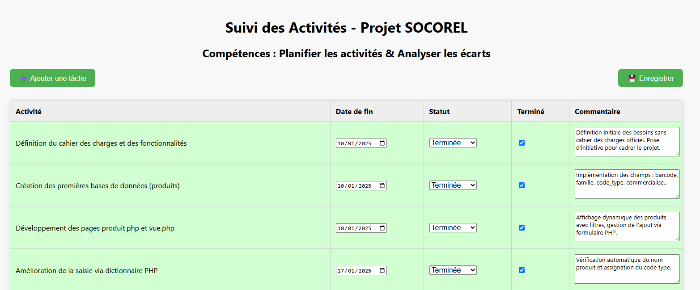
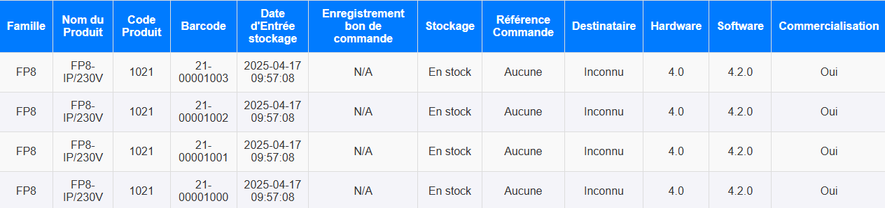
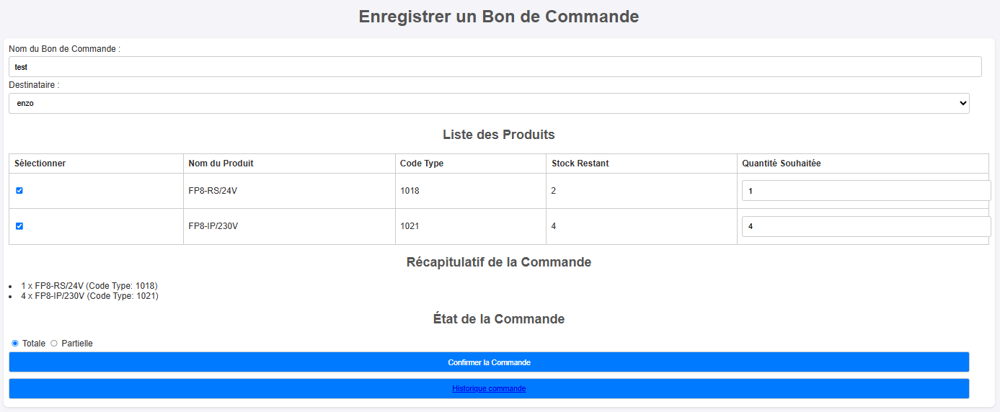
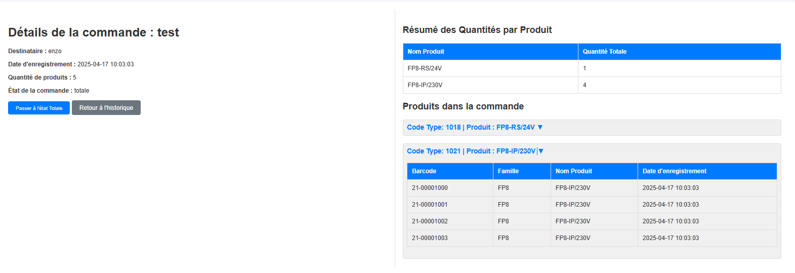
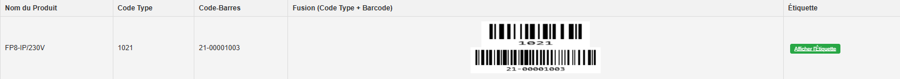
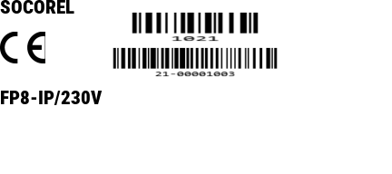
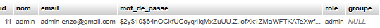

Présentation de la mission
Dans le cadre de mon stage chez SOCOREL, entreprise spécialisée dans les systèmes électroniques et la gestion technique des bâtiments, j’ai été chargé de développer un outil web de gestion des stocks.
L’objectif principal était de concevoir une plateforme interne permettant d’enregistrer, suivre et organiser les produits électroniques de l’entreprise à l’aide d’un système de numérotation par code-barres. L’outil devait également permettre la gestion des commandes et l’édition d’étiquettes d’identification pour chaque produit.
Le projet devait répondre à des besoins concrets : traçabilité, gestion des quantités, contrôle des familles de produits, mise à jour des versions hardware/software, sécurisation des accès, et personnalisation selon les différents rôles utilisateurs.
Étapes d'avancement du projet
🔗
Accéder au projet Suivi Socorel

Semaine 1 (06/01 - 10/01)
La première semaine a été consacrée à la réflexion autour des besoins fonctionnels du projet. En l'absence de cahier des charges officiel, j’ai défini un document de spécifications de base listant les fonctionnalités attendues : gestion des produits, enregistrement des commandes, génération d’étiquettes, et affichage dynamique des données.
J’ai ensuite créé les premières tables de la base de données (produits, familles) avec des champs comme : barcode, nom_produit, code_type, famille, created_at, etc. Cela a permis d’établir un socle solide pour les futures opérations.
Deux pages web ont été développées :
- produit.php : formulaire d’enregistrement d’un produit.
- vue.php : tableau dynamique pour afficher les produits enregistrés avec système de filtre (famille, nom, etc.).
Semaine 2 (13/01 - 17/01)
Cette semaine, j’ai amélioré le système de saisie des produits avec l’ajout d’un dictionnaire PHP ($productMapping) pour associer automatiquement chaque nom de produit à son code_type. Cela a permis d’éviter les erreurs de saisie manuelle.
Ensuite, j’ai conçu un module complet pour la gestion des bons de commande avec création d’une nouvelle table bon_de_commande et de la page bon_commande.php. L’utilisateur peut :
- Saisir un nom de commande et un destinataire.
- Choisir des produits à ajouter au bon en fonction du stock restant.
- Définir l’état de la commande : complète ou partielle.
Semaine 3 (20/01 - 24/01)
J’ai commencé le développement de la génération d’étiquettes produits. Ces étiquettes devaient contenir :
- Le nom du produit
- Deux codes-barres : le
code_type et le barcode
- Les logos CE, RoHS et poubelle barrée
Une première version a été testée mais des problèmes de format ont été rencontrés (codes illisibles à l’impression). J’ai donc temporairement mis cette partie en pause pour y revenir plus tard.
En parallèle, j’ai mis en place une table utilisateur avec sécurisation des mots de passe via BCRYPT, et gestion des rôles (admin/utilisateur) et groupes.
Semaine 4 (27/01 - 31/01)
Développement de la page historique_commande.php affichant toutes les commandes passées avec leurs détails : nom, destinataire, état, nombre de produits. Possibilité de cliquer sur une commande pour voir ses détails (via details_commande.php).
Création de la page d’accueil sécurisée avec tableau de bord affichant les liens disponibles en fonction du rôle utilisateur connecté. Cela améliore la navigation et l’expérience utilisateur.
Des fonctions ont aussi été ajoutées pour modifier l’état de commercialisation des produits ou mettre à jour une commande existante (ex : changer le destinataire ou le nom de commande).
Semaine 5 (03/02 - 07/02)
Mise en place d’un nouveau système de gestion des versions produit. J’ai créé une nouvelle table soft_hard avec les champs :
- Hardware (ex : v1.0)
- Software (ex : v1.2)
- Famille, code_type, date de mise à jour
Une nouvelle page
software-hardware.php permet d’afficher et d’ajouter de nouvelles versions. Le formulaire produit a été modifié pour permettre de choisir la version exacte à associer à chaque produit.
Semaine 6 (10/02 - 14/02)
Retour sur le problème d’impression d’étiquettes. Grâce à l’aide d’un collègue, j’ai adapté le format d’étiquette (24 x 54 mm) et résolu les erreurs de redimensionnement. L’étiquette finale est scannée sans difficulté.
Pour conclure la mission, j’ai ajouté une dernière fonctionnalité très utile : produit_info_scanner.php. Cette page permet de scanner un code-barres (via lecteur ou caméra) et d’afficher immédiatement toutes les infos liées au produit (matériel, logiciel, date, etc.).
Fonctionnalités développées
📌 Enregistrement et gestion des produits
Chaque produit est enregistré avec un numéro de série unique, un nom, une famille, et un code de type. L'utilisateur peut également choisir une version hardware et software spécifique. Le produit est ensuite ajouté à la base de données avec une vérification du statut de commercialisation.

Capture d'écran de produit.php ou du formulaire produit
🗂️ Affichage dynamique des produits
Une page affiche tous les produits enregistrés sous forme de tableau. L’utilisateur peut filtrer les résultats selon la famille, le nom ou le statut de commercialisation. Les champs version, software et hardware sont également visibles.

Vue des produits
🧾 Gestion des bons de commande
Une interface intuitive permet de créer un bon de commande, de sélectionner les produits en stock, d’indiquer le nom du client, et de choisir l’état de la commande. Les quantités sont automatiquement vérifiées pour éviter les erreurs.
Capture d'écran de bon_commande.php
Affichage du détail d'une commande
🏷️ Génération et impression d’étiquettes
Chaque produit peut générer une étiquette contenant les logos officiels (CE, RoHS...), le nom du produit, et deux codes-barres (code_type et numéro de série). Les étiquettes sont imprimables dans un format défini (24x54 mm).
Code barre produit généré
Étiquette produit généré
🔒 Authentification et gestion des utilisateurs
Un système d’authentification sécurisée a été mis en place avec rôles ("admin", "utilisateur") et groupes ("declic", "btib"). L'accès aux pages est limité selon ces rôles.
Table utilisateur
🔧 Suivi des versions matériel et logiciel
Chaque produit est lié à une version matérielle et logicielle. L’administrateur peut créer ou modifier ces versions, et les lier à une gamme de produit précise.

Affichage des différentes version pour un produit